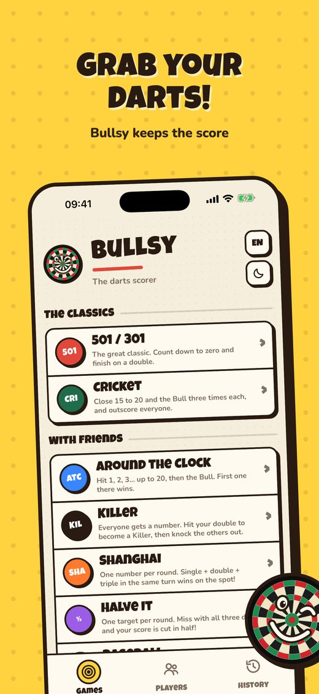
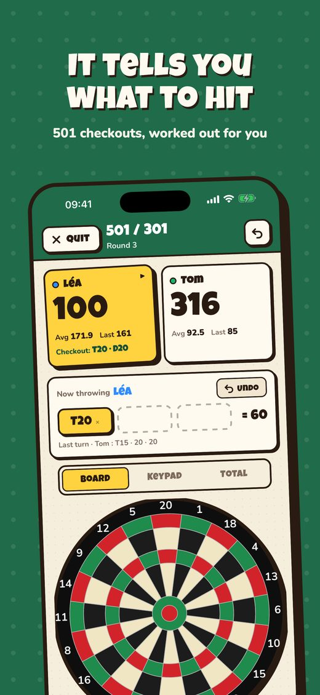
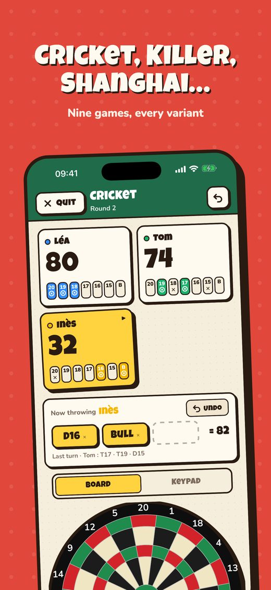
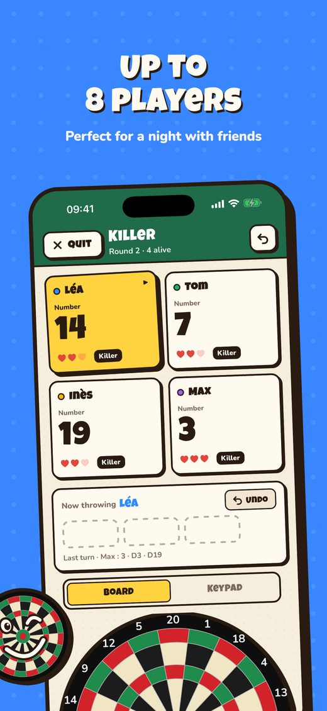
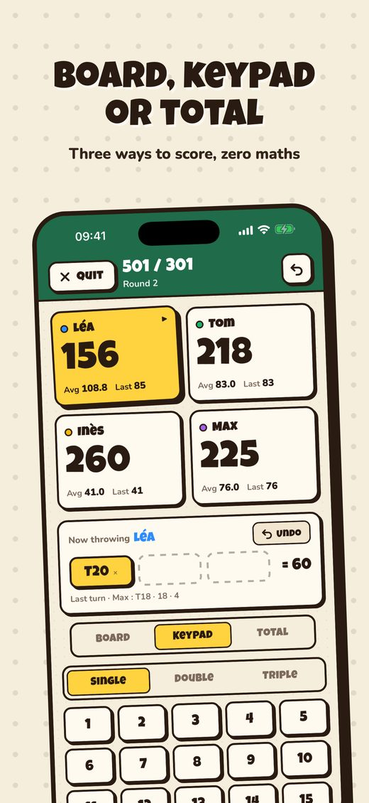
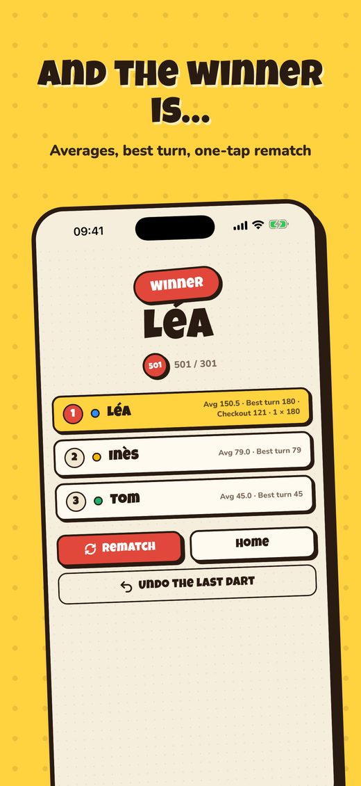
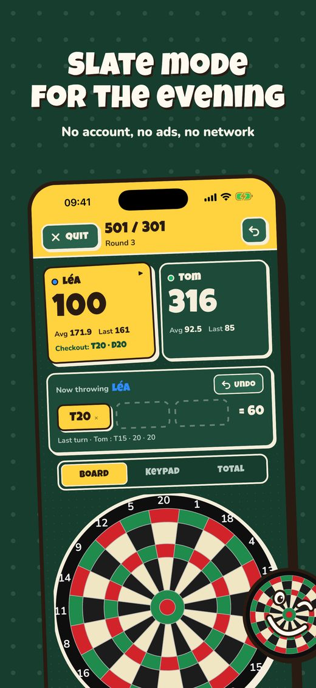

Bullsy
The simple, friendly darts scorer.







Grab your darts, Bullsy keeps the score
Tap the segment your dart landed in on the on-screen dartboard. Bullsy does the maths, suggests checkouts and keeps everyone's score.
Nine games included
- 501, 301, 701 and 1001, with double out, double in and legs
- Cricket, standard or cut-throat
- Around the Clock, Killer, Shanghai, Halve It
- Bob's 27, Count-Up, Baseball
Made for real games
- Three ways to enter scores: touch dartboard, keypad, or turn total
- Made a mistake? Undo with one tap
- Games saved automatically, up to 8 players
- No account, no ads, works without a connection
- In English, French, German and Dutch